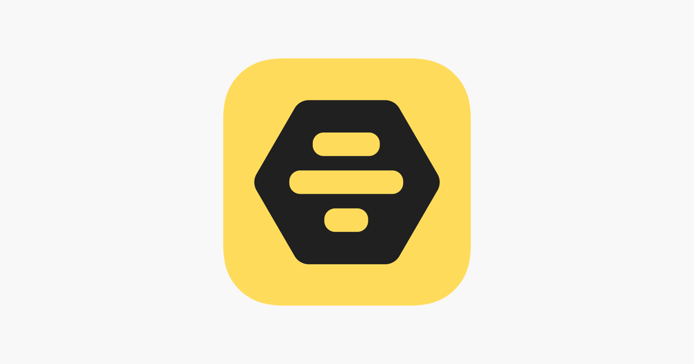

约会、交友、职场一手包办：Bumble 在同类应用里的位置
用过几款约会应用之后，为什么我还在留着 Bumble。它的"女性先开口"和 24 小时倒计时是噱头还是真的改善了体验？Bizz 模式又值不值得单独开一份档案。
同类应用里，Bumble 是一个让人很难一句话归类的产品。很多人第一次打开它是冲着"约会"来的，但用了一两周之后发现，它最有意思的部分可能反而不在 Date 模式上。在 Tinder 那种无限右滑的生态里，Bumble 从一开始就走了一条相反的路：限制开口权、强制回复期限、把"滑卡"这个交互原封不动搬到交友和职场场景里——三模式共用一个账号，却各自维护独立的档案和匹配池。想了解这套机制的完整设计思路，可以直接看它的官网。
如果你从来没接触过它，先建立一个基本印象：它不是"更严格的 Tinder"，而是一套重新分配社交主动权的系统。

这篇文章就用用过好几款同类工具的老用户视角，把它放进同类的坐标系里谈三个问题：它在同类格局里排什么位置、它凭什么单独值得一篇、以及为这些特性你需要付出什么代价。
它在同类里的位置
约会社交应用的大致格局可以粗分成几类：大厂系的"流量池"——用户基数大、匹配靠算法推荐、开口权基本对等；垂直系的"小众社区"——靠兴趣标签或身份认证筛选，池子小但相对干净；还有一类就是 Bumble 代表的"规则派"——不靠算法调参取胜，而是在互动机制上做硬约束。
规则派这条路走通的不多——大多数应用不敢碰"开口权分配"和"回复期限"这类会直接降低用户活跃度的机制。Bumble 敢，而且做成了。它的用户量级不如大厂系那几款，但在欧美市场的女性用户留存和活跃时长数据一直处在第一梯队，这套机制确实换来了不一样的池子质量。
两个别家没有、它做得特别好的点
从样本里提炼的差异化特性不少，但挑最核心的两个——这两个是我用过同类工具后觉得"回不去"的地方。
24 小时倒计时不是噱头，是真的在改变体验
配对之后必须在 24 小时内开口或回复，否则匹配自动过期。这条规则从 Bumble 第一天就有，也是它被吐槽最多的地方——"就一天？太忙了没时间打开应用不就白配对了？"
但真用起来之后你会发现，这条规则干掉的恰恰是同类应用里最令人沮丧的那部分体验：配对了就躺进列表里躺半年、你发了消息对方已读不回、匹配池里堆积了几百个"还没说上一句话"的名字。在 Bumble 上，配对就是一个带时间戳的邀请——过期了就消失，你不会在打开应用时被一屏"未回复"压得焦虑。
倒计时的实际效果取决于你怎么用。通勤刷 20 分钟，看见右滑的配对就顺手开个头，错过一个两个也没损失——池子里的人不会因为你没发消息就永远蹲在那等你。这跟其他应用里"配对越多越懒得说话"的恶性循环正好反过来。Bizz 模式也沿用了这条规则，只是过期后不像约会那样有情感损失——职业连接过期了就过期了，下一个更重要。
三模式隔离，一套账号三份社交人格
Bumble 有三个模式：Date（约会）、BFF（交友）、Bizz（职场人脉）。共用一个账号，但档案、匹配池、对话三套完全隔离。照片、Bio、筛选设置、匹配对象——切模式就像切换一个全新的身份。
这个设计在同类里几乎没有竞品做得到。传统职业社交平台和约会平台是完全割裂的两个 App，你得各维护一套资料、各攒一套人脉。Bumble 把三种社交场景收进一个壳里，又用机制把它们分得干干净净——工作日切 Bizz 聊合作，周末切 Date 或 BFF，同事不可能在约会池里刷到你，约会对象也不会撞见你写着"正在找合伙人"的职业档案。想细挖各模式的切换细节和进阶玩法，去bumble文档里能翻到完整的操作说明。
样本里提到的"分时段运营"是最常用的玩法：同一城市，Date 模式的筛选距离设 10 公里（想常见面），Bizz 模式放宽到 50 公里（行业人脉不一定在通勤圈内），BFF 模式关掉不想用就好——三个模式各自独立消耗，互不干扰。验证和订阅是账号级的，做一次照片验证三个模式的档案都挂徽章，会员额度的 Spotlight、SuperSwipe 在哪个模式消耗由你选，这点设计得很厚道。
为这些优势你需要付出什么
Bumble 不是没有代价，它的取舍集中在"上手门槛"和"平台限制"两件事上。
先说上手门槛。刚注册时你得一次性面对三个模式的选择——约会？交友？职场？可以多选，但选错了也不会立刻生效，真正的成本在后面：如果你想把 Bizz 用好，得单独搭一份职业档案，职业场景照优于精修头像，经历字段、职业意向、正在找什么合作都要写清楚，这份档案比约会档案复杂得多。安装包直接从官方下载拿就行，iOS 和 Android 都有对应渠道。不像其他应用"注册完就能刷"，Bumble 的三模式设计要求你先想清楚自己在这个平台上想做什么，再决定投入哪一份精力。
平台限制也是实打实的。Bumble 在国内的可用性依赖网络环境，而且它的主要用户群体在海外——Date 模式在国内的池子密度和匹配效率没法跟本地化应用比。Bizz 模式同理，上面的职业连接主要是欧美从业者，如果你做的是纯国内业务，短期内不会有太大收获。这不是 Bumble 的问题，是平台定位决定的。
还有一点值得说：付费门槛。免费档能用的筛选只有距离、年龄、性别三项，进阶筛选（星座、政治立场、养不养宠物等）全部锁在付费里。不过从实际使用看，免费三项用对了已经能把池子质量拉起来——通勤圈内 20 公里、年龄设得比理想型宽两三岁、性别选好，先筛再滑，命中率会明显提高。付费的价值在"池子太冷清"或者"你有明确的偏好条件"这两种场景下才体现得出来。
选购结论
什么样的人选 Bumble？
如果你在海外生活或者愿意把社交圈扩展到海外，想找一个"不那么像刷短视频"的约会/交友/职业连接工具，Bumble 是值得认真用的——三模式隔离意味着你不用分别装三个 App 维护三套资料，24 小时倒计时帮你把注意力集中在"当下最重要的那几条连接"上，而不是在几百个"未回复"里内耗。
如果你只在国内、只想要约会功能、或者对"女性先开口"这条机制本身没有任何兴趣，那 Bumble 不是你的首选——本地化应用的池子密度和匹配效率会直接胜出。Bizz 模式同理，明确的国内职场需求还是走正规招聘渠道效率更高。
我的推荐语很简单：把 Bumble 当成一套"多场景社交工具箱"，而不是又一个约会 App。先花十分钟想清楚三个模式里你真的需要哪一个，再把对应模式的档案搭好、筛选设对——这套机制跑起来之后，你会发现社交这件事原来可以不用那么累。关于 Bumble 的资料整理，我放在了三个仓库里，方便不同偏好的人拿：GitHub、Gitee、GitCode。